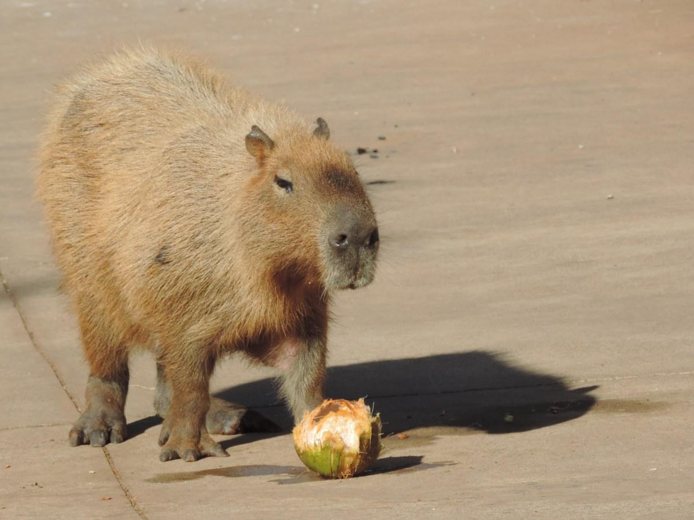
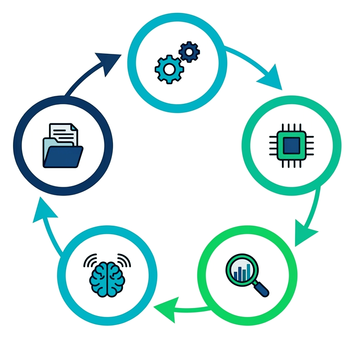
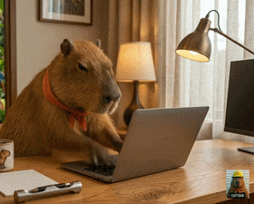

Caçando bugs em
do olho humano à IA
Daniel Diniz
Quem sou
- Pai
- Biólogo
- Programador amador
- Python Triage Team
- Python Fuzzing Team
- Caçador de bugs
Um paralelo
| Biologia |
: |
Programação
|
| Animais |
: |
Bugs |
⬇️
Descobertas
Observação Direta
Método mais básico
Registro de indícios
Evidências indiretas da presença de animais
Armadilhas Fotográficas
Câmeras automáticas com iscas diversas
Paralelo
Simples Observação: Revisão Manual
Registro de Indícios: Análise Estática
Armadilhas Fotográficas (Iscas): Fuzzing
A Equipe de Pessoas Biólogas
Especialistas em diversos grupos
Relatórios de Campo
SPOILERS!
Técnicas
Revisão Manual
Análise Estática
Fuzzing
Análise Baseada em IA
Revisão Manual
Olho humano
Depende da experiência
Não escala bem
Desenvolvimento Guiado por Uai

Análise Estática
Não executa, procura padrões
Regras pré-definidas, configuráveis
Funciona bem em larga escala
Tende a gerar falsos positivos
Fuzzing
Fornece inputs problemáticos
Executa, análise dinâmica
Alcança bugs profundos
Escala bem, exige muita CPU
Análise Baseada em IA
Estruturada, com agentes especializados
Revisão direta do código
Procura por padrões
Testa inputs problemáticos
Análise Baseada em IA
Especialização
Colaboração
Verificação
Ferramentas
Para cada técnica vista
Para Revisão Manual
def max_power(a, b):
"""Maior número na exponenciação de um par."""
if a > b:
result = b ** a
if b < 0 and a % 2 == 0:
result = abs(result)
return result
else:
result = a ** b
if a < 0 and b % 2 == 0:
result = abs(result)
Para Análise Estática
Padrões locais: Ruff, Pylint
Tipos e fluxo: mypy, Pyright
Fluxo de dados: Pysa, CodeQL
Contratos: CrossHair
Para Fuzzing
Atheris: cobertura
Hypothesis / HypoFuzz: propriedades, cobertura
OSS-Fuzz: campanhas contínuas
fusil / lafleur: fuzzers especializados
lafleur

Seleção
Mutação
Execução
Análise
Introspecção
class Silly:
def __iter__(self):
raise RuntimeError("ninguém espera a Inquisição Espanhola")
def generator():
yield from Silly()
next(generator())
Esperado: RuntimeError
Observado: crash
Para Análise Baseada em IA
Revisão de PR
Copilot · CodeRabbit · Qodo
Análise + IA
Semgrep · Snyk · CodeQL
Auditoria de repositório
RepoAudit · toolkits
Para Análise Baseada em IA
Família -review-toolkit:
- code (Python puro)
- cext (extensões C e C++)
- ft (suporte a Free Threading)
- cpython (CPython em si)
- rust-ext (extensões Rust)
Da pegada à descoberta
Agentes especializados
↓
Achados candidatos
↓
Reproduzir + cruzar + deduplicar
↓
Evidência priorizada
↓
Pessoa mantenedora
Um bug corrigido... quase
groupby_next:
✅ referência protegida
_grouper_next:
❌ bug permaneceu
O agente examinou o histórico e procurou a variante.
Um bug corrigido... quase
class Key:
__hash__ = None
counter = 0
def __eq__(self, other): # <- AQUI
if not self.counter:
self.counter += 1
try: next(grouper_iter) # <- E AQUI!
except StopIteration: pass
return NotImplemented
return True
|
from itertools import groupby
it = groupby(range(4), lambda x: Key())
key, grouper_iter = next(it)
items = list(grouper_iter)
|
Do achado à contribuição
achado
↓
reproducer
↓
deduplicação
↓
comunicação + validação
↓
correção
Respeito ao tempo das pessoas mantenedoras
As Campanhas
2008: primeiros bugs, no olho
2024-2025: fuzzing do CPython
2026: IA no CPython e nas extensões
Olho → fuzzing → IA
Resultados: Fuzzing
fusil: 146 bugs distintos
52 issues em 2024-2025, release blockers
lafleur: 28 bugs no JIT
Falta de memória: 31 bugs numa issue
Resultados: IA
Extensões: ~690 achados, 215+ reproduzidos
138 bugs em extensões, 55 no CPython
Free threading: 4.556+ corridas, 30+ crashes
No total: 464 bugs, 321 resolvidos
Achado não é bug
~690 achados
↓
revisão + reprodução
↓
215+ reproduzidos
↓
deduplicação + comunicação
↓
138 bugs distintos
Importância das Campanhas
Bugs corrigidos
Padrões recorrentes aparecem
APIs e práticas podem melhorar
Projetos passam a caçar melhor
Importância das Ferramentas
Ampliam o olhar
Trazem perspectivas diferentes
Ensinam a pensar como caça-bugs
"Como isso pode dar errado?"
Futuro
Modelos mais capazes
Ferramentas + verificação melhores
Mais gente caçando
Outras matas
As ferramentas funcionaram com:
- CPython
- Pillow
- Cython
- PyPy
- Dezenas de outros projetos
Também podem funcionar para você!
Contato
 devdanzin@gmail.com
devdanzin@gmail.com
 https://t.me/devdanzin
https://t.me/devdanzin
 https://github.com/devdanzin
https://github.com/devdanzin
 https://mastodon.social/@danzin
https://mastodon.social/@danzin
 https://discuss.python.org/u/devdanzin
https://discuss.python.org/u/devdanzin

Um Convite
Vamos caçar bugs?